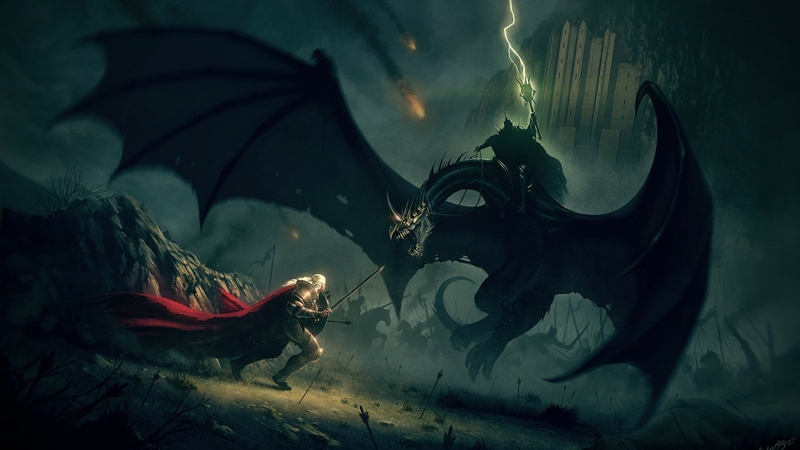
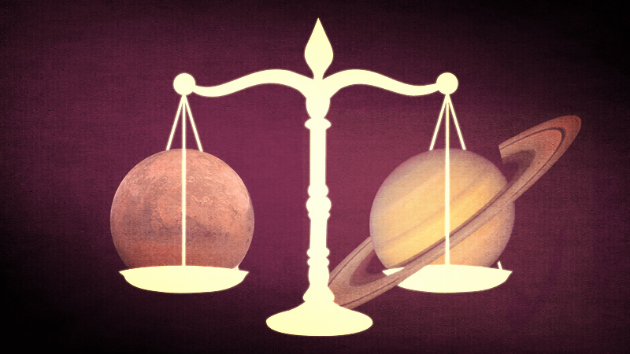

The red planet has now entered the sign of Sagittarius from Scorpio, which can be compared to walking from utter darkness and despair into the blazing light of truth.
We are now more clearly able to see into the situations that have bound us in obsession or misery before and can begin to cleanse that darkness that was stirred from the depths of our own pain, not rejecting it, but working to accept our faults and foibles with more compassion, more righteousness.
Mars is the fire sign of Sagittarius is closer to his warrior nature now, released and charging forward. With the recent New Moon in Leo, also a fire sign, we can feel the collective sense of optimism, of starting again. This New Moon had a friendly trine aspect to Saturn in Sagittarius (a trine is an easy aspect, meaning, an easy relationship, support between the two planets) lending it a sense of purpose and gravitas, but not heaviness. We feel steady, strong, purposeful.
We need to still be on our toes for a while yet though, whilst the planet Saturn continues to retrograde (Retrograde Motion is when a planet slows down in his orbit and appears to move backwards) through Sagittarius.
He only becomes direct (returns to his normal speed) 13 August 2016 and will take quite some time to return to normal speed. Saturn symbolises time, primarily, as well as difficult Karma we have to work out, fears and insecurities we hold and ultimately wisdom – but only through difficulty. He’s the initiator, the stern and remote father, the holder of the key to long lasting growth or a lifetime of resistance.
We can choose what we wish to do with his energy, whether we want to resist his lessons, or accept them and shoulder the necessary burdens. It is, as always, up to us.
So while we may be feeling energised and motivated, there’s still a few issues we need to take care of before we charge ahead. There’s still vestiges of darkness hovering over us, and by 24 August 2016, it will reach a crescendo.
These two Titans, Mars and Saturn, traditionally Malefic Planets (meaning, planets that challenge us, bring us difficulty and discord and ultimately growth), are bound to meet (called a conjunction) on this date, at 9 degrees of Sagittarius. Mars and Saturn dance together every 2 years, so the chances are great that you are someone (like me) born with a Saturn Mars conjunction in your Astrological Birth Chart, which can equip you for the energies of this time. The last time Saturn & Mars joined together at this degree of Sagittarius, was during the winter (Northern Hemisphere) of 1986, on 19 February.
And so, they will join together, the immovable, Saturn, meeting the unstoppable, Mars.
The reverberations will be felt on a collective level, the ringing in our ears, the stinging of our bones, and the shake of the earth will feel these shockwaves as these Titans battle it out in an unholy and unwanted alliance.
These giants will meet at a critical point, in which the Star Antares resides in the cosmos. Stars in Astrology have qualities just like planets, and Antares has qualities similar to Mars and Jupiter (traditionally a good planet, bringing many benefits). Antares the Star lends the effects of obsession, of power, of desire, sometimes of great success. Antares will heighten the intensity of this meeting and we may feel impelled, or even obsessed, with something in our lives – this could be anything – or we may feel it collectively.
The dark side is fanaticism, the feeling of being convinced that what we believe is completely right, that we have to force others to see our point of view. We can see this dark energy in the American Election Race, the Ego reining in full force and damaging not only others, but our precious selves.
The light is the ability to stand true for what we know is right, for justice, but with no force. Being a true spiritual warrior, and having the courage and conviction not be swayed by public opinions, to have a backbone.
The gift of a Saturn Mars conjunction is the gift of strength and pure endurance.
Saturn lends his stabilising effect to an impulsive and scattered Mars, giving him focus and wisdom, lending realism to spontaneity and shaping the unshaped. Mars in Sagittarius can have unstoppable enthusiasm, so much so that he just makes a mess, but Saturn, the Father of Wisdom, stands firms and says ‘this is as far as you can go, and no further’.
We can either rebel and become deeply frustrated with this energy in our lives, the feelings of limitations whether in work or in our relationships, or we can work with what we’ve been given and become a master of it, become mature warriors. Again, it’s up to us.
Sometimes the frustrations can erupt into violence and this is where we must employ compassion towards ourselves, towards others, and be very sure not to run ourselves into the ground and make impossible demands on ourselves both physically and emotionally. Saturn and Mars is an intense energy that can literally move mountains but also destroy them. The Tower Tarot Card comes to mind, the possibility of destruction if not carefully monitored.
And so, as from 24 August and the days surrounding, let us tread lightly, let us not be pulled into the fiery Vortex and instead use this energy constructively, for we can achieve truly great things when our hearts and minds are pure and our intentions truthful. Sagittarius is at heart, a spirit warrior and delights in justice fairly done, in adventure, in freedom. We need to realise this freedom, and not the lack of it in our lives – in every area.
If you have any planet or point at 9 degrees of a mutable sign, such as Virgo, Pisces, Gemini or Sagittarius, this will be a time of great change which has been building all year (you can cast an Astrology Chart here) . Things will come to a close in the area of your chart this degree falls and perhaps you will be able to finally integrate the enormous challenges that have come your way this year, and find yourself truly a warrior.
“Supreme excellence consists of breaking the enemy’s resistance without fighting.” Lao Tzu, the Art of War 